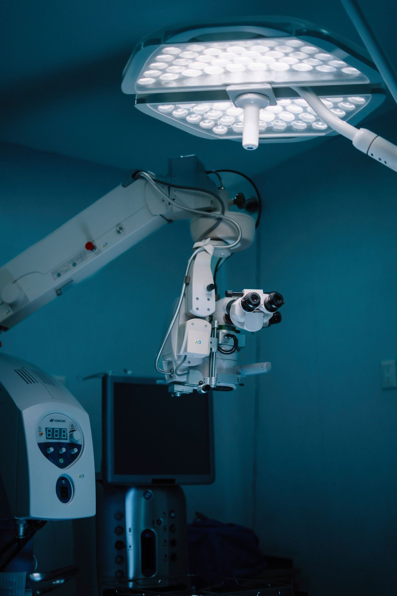

The second robot they didn't buy
Closed — re-review bookedTHE BRIEFA district general hospital's board had budgeted for a second robotic system. The first was "always busy", the waiting list was growing, and the business case wrote itself. They asked for an assessment before signing.
WHAT THE LOGS SAIDTwelve months of theatre records: the existing system was staffed and available for 760 robotic theatre hours and was used at the console for 312 of them — 41%. The robot was not the bottleneck. Lists started late around instrument turnaround, two specialties booked the robot for cases that case-selection criteria would have routed to straight laparoscopy, and Friday afternoons were effectively unstaffed. "Always busy" was true of the corridor conversation and false of the machine.
THE DECISIONThe report recommended against the purchase — in writing, with the utilisation table on page two — and costed the alternative: a scheduling rebuild, instrument-set duplication for the two highest-volume procedures, and case-selection criteria agreed by the specialties. Total cost, a small fraction of a second system's service contract alone.
THE OUTCOMEConsole utilisation reached 63% within two quarters on the same single system. The capital was deferred, not cancelled: the report named the trigger for revisiting it — sustained utilisation above 75% for two consecutive quarters — and the re-review is booked against that number, not against enthusiasm.
"Colin told our board not to buy the robot we had already budgeted for — and showed the working. Utilisation is up by half, and we will buy the second system when his numbers say so. Not before."
J. WHITFIELD — CLINICAL DIRECTOR OF SURGERY, THE CLIENT HOSPITAL
